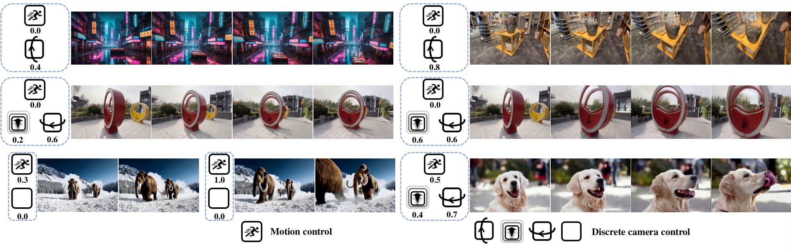
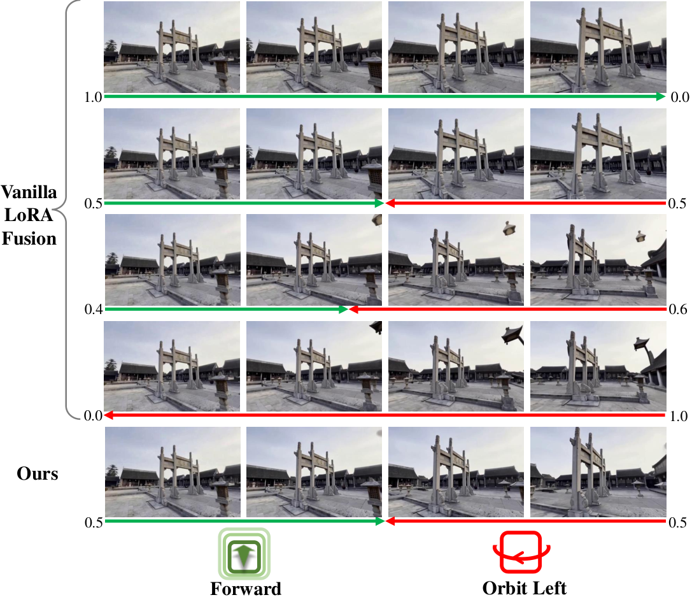
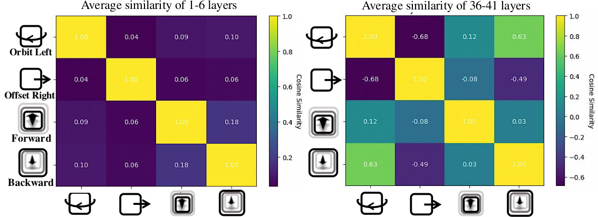
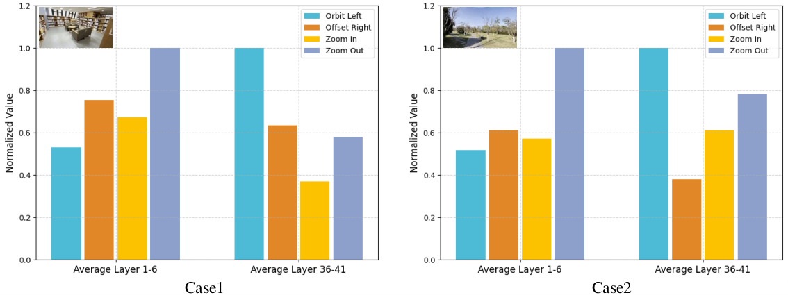
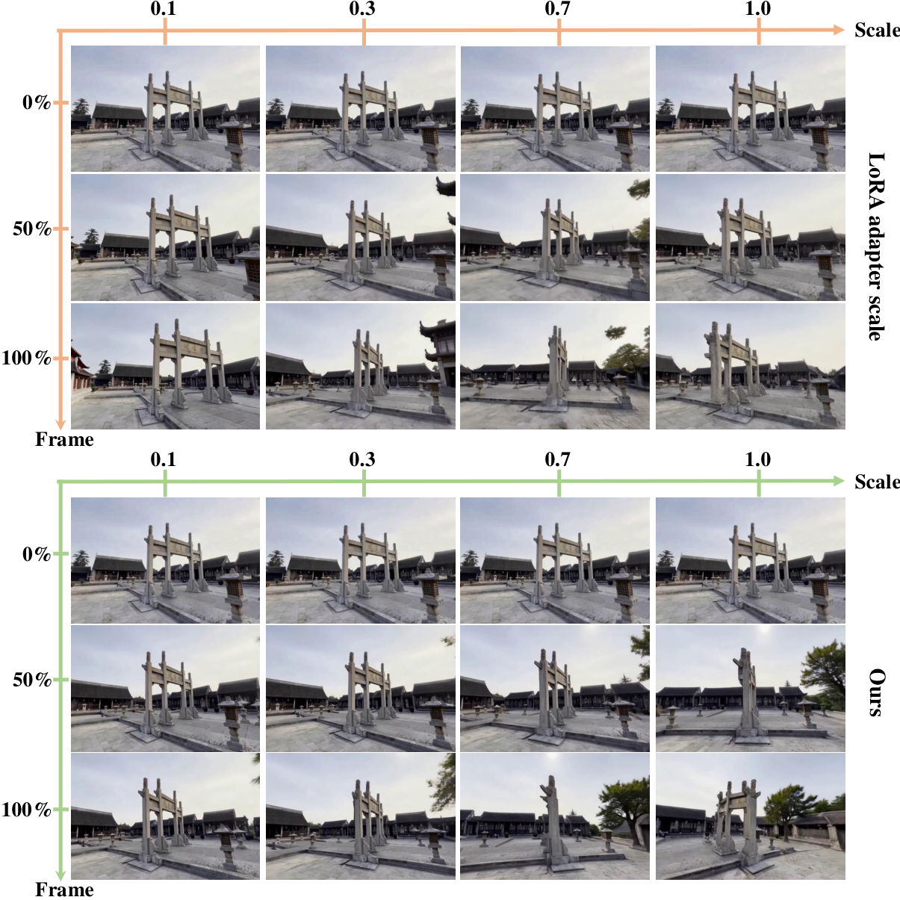
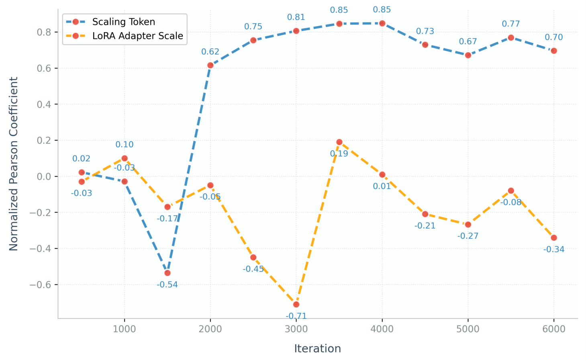
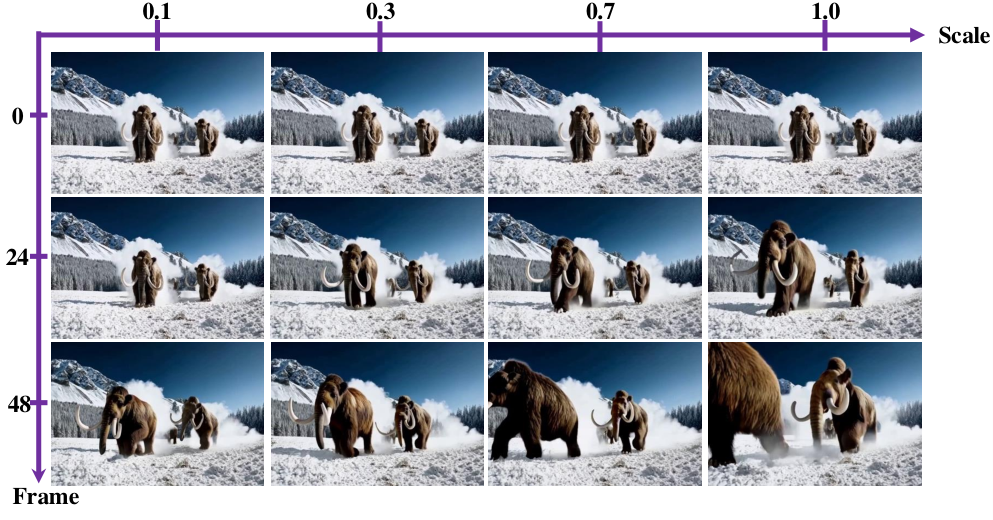
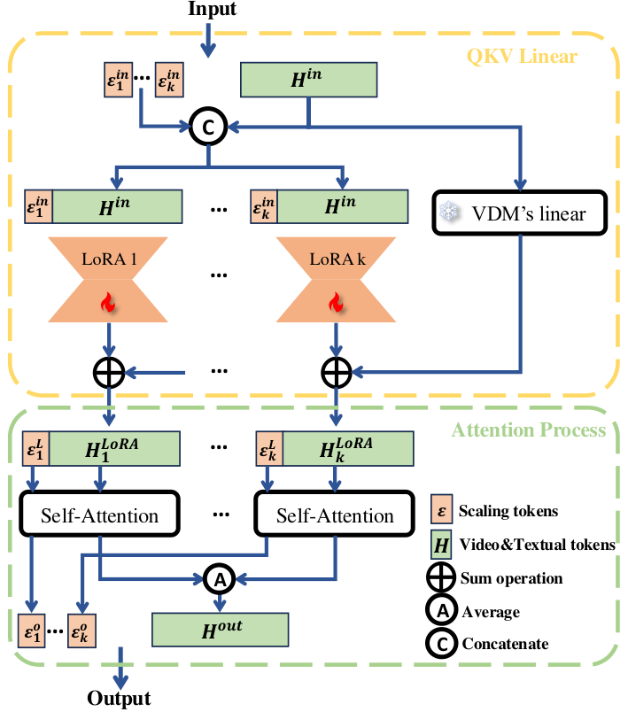
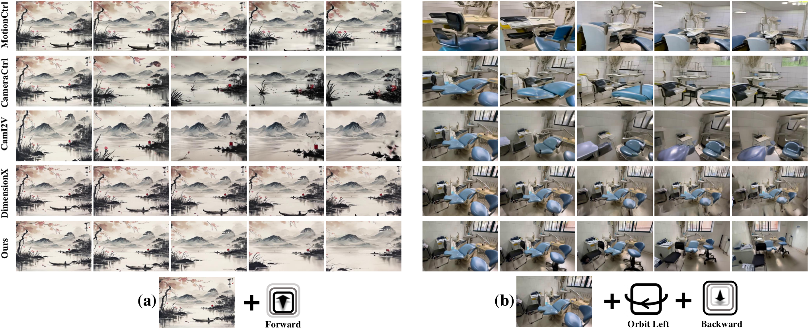

把 LoRA 融合从"高层风格叠加"下沉到"低层相机控制"。核心判断:vanilla 的线性加权融合 $\Delta W=\sum_i\lambda_i\Delta W_i$ 用于高层的风格/主体编辑没问题,但用于低层相机轨迹必然出现突变与不可线性调节 —— 因为各 LoRA 的 Frobenius 范数相差悬殊(一个模块压过另一个),且强度旋钮 $\lambda$ 根本不是模型输入。LiON-LoRA 用逐层范数归一化(式 4)修融合稳定性、用缩放 token(式 6–7)把"运动幅度"变成模型能读到的显式条件,并以训练无关的方式支持多轨迹组合与相机-物体解耦控制。
视频扩散模型(Video Diffusion Model, VDM)已经能生成逼真视频,但要精确控制镜头怎么动、物体动多快仍然困难。显式注入相机位姿的办法(CameraCtrl / CamI2V 一类)泛化差、要大量标注数据;用 LoRA 隐式驱动的办法(AnimateDiff / DimensionX)便宜但控制不精。LiON-LoRA 的诊断是:问题不在 LoRA 本身,而在"多个 LoRA 怎么合" —— 业界把 LoRA 融合当高层技巧(风格、主体),却没人从向量空间角度量化低层可控性。论文提出三条原则:线性可伸缩(Linear scalability)、正交性(Orthogonality)、范数一致性(Norm consistency),并给出两条可落地的机制 + 一个训练无关的融合框架。

读这一篇要先理解两类"控制相机"的路线各自卡在哪里:
| 路线 | 代表方法 | 怎么控相机 | 具体失败模式 |
|---|---|---|---|
| 显式注入位姿 | CameraCtrl / MotionCtrl / CamI2V / DimensionX | Plücker 嵌入、相机参数序列、外极注意力 | 需从大规模视频抽取运动轨迹重标注;条件过"硬",动态场景跟不上;易过拟合训练集 → 幻觉与闪烁 |
| LoRA 隐式驱动 | AnimateDiff(8 个 LoRA)/ DimensionX | 每个相机动作训一个 LoRA | 融合不稳定(方向突变);幅度不可线性调;组合多了互相冲突,某些运动直接丢失 |
| LoRA 融合治理(本文) | LiON-LoRA | 3 类原语各训 LoRA + 范数归一 + 缩放 token + 训练无关融合 | 训练极省(4k 步);融合平滑、幅度线性;但仅 3 类原语,非任意轨迹 |
论文的关键转念是:前人的注意力都在"如何从数据里学出高层 LoRA 能力",没人从向量空间角度量化低层可控性。一旦把 LoRA 参数当作向量空间里的对象来看,融合不稳定就是范数(长度)问题、组合冲突就是相关性(夹角)问题、强度不可调就是缺少一个标量输入 —— 三条都能对应到具体的数学对象上,也就能分别修。这是本文最值得学的方法论:先给失败现象找到可度量的向量空间归因,再动手改。
| 假设 | 依据 | 失效条件 |
|---|---|---|
| 浅层 LoRA 特征近似正交,足以解耦低层控制 | 经验测量:浅层余弦相似度 $0.06\pm0.06$(图3/原文 Figure 4);文献 [1,77] 称低频相机控制主要编码在初始 transformer 块 | 深层耦合显著增强(原文明示),而深层负责高频生成 —— 需要精细高频一致性的场景(细微视差、长序列)可能失稳。论文对深层无任何对策 |
| 运动幅度可用一个标量 $\mathcal{S}\in[s,1]$ 表达,且与"采样帧数"成正比 | 渲染时用 $\mathcal{S}$ 决定取前 $600\cdot\mathcal{S}$ 帧中的 49 帧 | 本质是"用视频播放长度代理运动幅度",隐含匀速假设;对变速运动、非线性轨迹、含遮挡的运动,单一标量不足以描述 【推测】 |
| 物体运动强度可用光流幅度作为代理量评估 | 图5(原文 Figure 6)的 Pearson 相关性分析 | 光流幅度是像素级量,与人类感知的"动作快慢"并不等价(如纹理稀疏区域、镜头外运动) |
| 不同 LoRA 的缩放 token 可在各自独立的注意力子空间互不干扰 | 图8(原文 Figure 8)的融合设计:各 LoRA 只 attend 自己的 $\mathcal{E}_i$,注意力后对 hidden state 取平均 | "取平均"是否真的不引入耦合,论文没有理论证明也没有消融(见第 15 节) |
| 项 | 定义 |
|---|---|
| 输入 | 单张参考图(首帧)+ 相机原语组合(如"前进 + 向左环绕")+ 各自的运动幅度缩放值 $\{S_1,\dots,S_k\}\in[s,1]$ |
| 输出 | 49 帧、480×720 的视频,相机按指定原语组合运动、物体运动强度按 $\mathcal{S}$ 缩放 |
| 可训练部分 | 每个相机原语一套 LoRA($r=256$)+ 该 LoRA 专属的缩放 token 线性投影 |
| 冻结部分 | CogVideoX 全部原始权重 $W^{\text{base}}$ |
| 符号 | 含义 | 维度 / 取值 |
|---|---|---|
| $i$ | 相机运动原语索引(或物体运动 LoRA) | — |
| $A_i,\;B_i$ | 第 $i$ 个 LoRA 的低秩分解矩阵 | $\mathbb{R}^{d\times r},\;\mathbb{R}^{r\times k}$ |
| $r,\;d,\;k$ | LoRA 秩、输入维度、输出维度 | $r=256$(实测超参) |
| $\Delta W_i$ | 第 $i$ 个 LoRA 的权重增量 $=A_iB_i$ | 同 $W^{\text{base}}$ |
| $\lambda$ / $\lambda_i$ | LoRA 注入强度(adapter scale)/ 融合系数 | 标量 |
| $\Delta\hat{W}_i$ | 范数归一化后的权重增量 | 同 $\Delta W_i$ |
| $\alpha$ | 归一化统一缩放因子 | $\alpha=\frac{1}{k}\sum_i\lVert\Delta W_i\rVert$ |
| $\mathcal{S}$ | 运动幅度缩放值(相机轨迹长度 / 物体运动速度) | $\mathcal{S}\in[s,1]$ |
| $s$ | 最小缩放值 | 相机 $s=49/600$;物体 $s=49/240$ |
| $\gamma(\cdot)$ | 傅里叶位置编码 | $\mathbb{R}\to\mathbb{R}^{2J}$ |
| $\mathcal{E}$ | 缩放 token(scaling token) | $\mathbb{R}^{d}$ |
| $H$ | 视觉 + 文本 token 序列(隐藏状态) | $\mathbb{R}^{n\times d}$ |
| $H'$ | 拼接缩放 token 后的序列 | $\mathbb{R}^{(n+1)\times d}$ 或 $(n+k)\times d$ |
| $H_i'$ | 第 $i$ 个 LoRA 的独立注意力子空间输入 | $[H;\mathcal{E}_i]$ |
| $J$ | 傅里叶编码的频率数 | 论文未给具体值 【待核实】 |
| $V$ | 采样帧数 | $V=49$ |
与同代相机编码方法对比会看得很清楚:UCPE 与 SCoPE 改的是注意力怎么算(把光线几何注入 Q/K);LiON-LoRA 改的是LoRA 权重怎么叠(范数与幅度)。前者回答"几何该去哪里",后者回答"多个能力模块如何共存"。两条路线正交,理论上可叠加。
论文的立足点是一个工程化简:3D 空间中的复杂相机运动可以分解成基本原语的组合。他们先在开源 CogVideoX 的 transformer block 线性层里注入 LoRA,验证"极少量参考视频 + 有限迭代"就能学会一个基本运动模式(证据是表 3)。参数更新过程:
其中 $i$ 索引不同的运动原语,$r,d,k$ 分别是 LoRA 秩与输入/输出维度,$\lambda$ 控制 LoRA 注入强度。式 2 就是标准 LoRA 形式 —— 注意这里已经埋下了后面的伏笔:$\lambda$ 是一个全局标量,不是模型输入。
| # | 原语 | 说明 |
|---|---|---|
| 1 | 水平/垂直偏移(horizontal/vertical offset) | 平移镜头 |
| 2 | 前进/后退(forward/backward movement) | 沿光轴推拉 |
| 3 | 绕场景中心的环绕(orbital rotation) | 轨道旋转 |
每个原语需要单独训练一套 LoRA 权重,并需要针对该运动准备的视频数据。数据制备方式:在 DL3DV 多视角数据集上先训 3DGS,再用 3DGS 渲染固定稳定的轨迹;移动距离按每个场景的中位深度自适应决定。
论文原文只列了三类基本原语(带正反方向),正文与图注中出现的具体 LoRA 名称只有 "forward"、"orbit left" 等方向性变体。所谓"轨迹控制精度"(RotErr / TransErr / ATE)衡量的是:能否准确执行这些原语的组合、且幅度按 $\mathcal{S}$ 线性缩放。它不支持任意自由轨迹(例如"先右移再上升同时侧滚"),也未覆盖 roll/pitch 等自由度。论文未给出所用 LoRA 的确切总数。这一点在对比 CameraCtrl / CamI2V(以完整位姿序列为条件)时必须分清 —— 两者的问题设定并不等价。
最朴素的 LoRA 融合是线性加权:
论文承认,式 3 用于高层可控任务(风格与主体融合)表现良好;但在低层相机运动融合上不行 —— 会出现"突然从前进切到向左环绕"的跳变,即便仔细调 $\lambda_i$ 也救不回来。于是从向量空间视角提出三个性质:
| 性质 | 问题诊断 | 论文是否实现了它 |
|---|---|---|
| 线性可伸缩 Linear scalability | 只调 $\lambda$ 无法在线性空间里精确控制相机轨迹;学习原语是"隐式"控制,缺少显式的线性可调量 | ✅ 实现了 —— 缩放 token(§3.4 / 式 6–7) |
| 正交性 Orthogonality | 多任务共享基础模型时,LoRA 特征间的高层相关性会导致非期望的增强或冲突,破坏各 LoRA 的特征 | ❌ 只做了观察,未做约束(§3.3 全是测量,无损失、无投影) |
| 范数一致性 Norm consistency | 各相机 LoRA 独立训练,低秩矩阵的 Frobenius 范数差异大 → 合并时被不成比例地放大/压制,一个模块压过其他 | ✅ 实现了 —— 逐层范数归一(§3.3 / 式 4) |

细读 §3.3 会发现一个重要的表述落差。论文先断言 "ensuring the orthogonality of the camera LoRAs should serve as the foundation"(正交性应当作为基础),接着给出的却全是测量结果:
摘要与贡献列表把 Linear scalability / Orthogonality / Norm consistency 并列为 "three core principles"、称方法 "acquiring linear scalability, orthogonality, and norm consistency",读起来像三项技术贡献。但正交性没有任何实现手段:全文不存在正交性正则项、不存在对 $\Delta W$ 的子空间投影分离;§3.5 中唯一与正交性相关的动作只是"给不同 LoRA 用各自的 linear 投影编码 $\mathcal{S}$,从而避免耦合"。也就是说:正交性是本文的经验前提,而非被构造出来的性质。真正的技术贡献只有两条:式 4 的范数归一 + 缩放 token。

这张图是全文最重要的经验依据,也是全文最大的未解问题:深层耦合已经明确出现,而论文对此不提任何对策。结合"低频 → 初始 block,高频 → 后续 block"的分工,深层恰好承担生成细节与长时一致性,而多 LoRA 在深层恰恰是可耦合的。当前方法能工作,依赖的是"低层控制主要落在浅层"这一分工事实。

论文给出的解法是逐层后归一化(post-normalization,只改结果不改训练):
其中 $\alpha$ 是 $k$ 个 LoRA 的统一缩放因子,取各 LoRA 范数的均值以"平衡地保留范数"。这一步的关键工程属性:零额外参数、零训练、一行代码。论文称其 "simple yet effective",并以图2 的定性证据支撑(融合平滑度显著提升)。
式 4 是全文最"便宜"的贡献(一行除法),也是论文宣称的第一条贡献。但它的证据链只有:图2 的两段视频对比(定性的平滑度) + 图 3d 的 2D 玩具示例。没有"去掉范数归一化"的定量消融表(RotErr / TransErr / ATE / FVD 的 Δ)。相对而言,缩放 token 至少有图 9(原文 Figure 10)的定量曲线。这是评价本文时应留意的举证不均衡。
论文用一张 2D 玩具图(原文 Figure 3)解释为什么非正交与范数悬殊会破坏融合。该图在 arXiv HTML 中是矢量图、无可下载位图,这里用流程图重述其逻辑:
论文给出的解法分工也很清楚:正交性交给"测量 + 依赖"(浅层本来正交,直接用),范数一致性交给"式 4 主动修正"。前者是免费午餐,后者是一行代码。
这是本文技术含量最高的部分 —— 把"运动幅度"从一个外部超参变成模型输入。
论文用试点实验确认"训练时调整各相机 LoRA 的 adapter 值 $\lambda$ 无法实现显式线性控制",并总结三条限制(已在 §2.1 列出):不是模型输入 / 大 $\lambda$ 损害泛化 / 只控注入强度不控轨迹精度。第③条特别值得玩味:$\lambda$ 本来就不是为低层几何设计的旋钮,强行拿它当"运动幅度"用,是概念错配。
定义缩放值 $\mathcal{S}\in[s,1]$ 表示每个相机运动的幅度,$s$ 为最小缩放值。训练对这样构造:从 DL3DV 渲染每条含 600 帧的片段,取该片段前 $600\cdot\mathcal{S}$ 帧中均匀采样的 $V=49$ 帧作为监督目标 —— 于是 $\mathcal{S}$ 在语义上就是"运动完成了整条轨迹的几分之几"。最小值为 $s=49/600$。
为提升 $\mathcal{S}$ 的细粒度表达,先用傅里叶位置编码,再过线性投影:
其中 $j\in\{0,\dots,J-1\}$ 是频率索引,$\mathcal{E}$ 即缩放 token。随后把它拼到视觉 + 文本 token 序列 $H$ 尾部:
$n,d$ 分别是原序列长度与 VDM transformer 的通道数。论文特别强调:对不同相机 LoRA 使用各自的投影 linear 来编码 $\mathcal{S}$,以避免耦合、保护正交性;并称新增可训练参数"可忽略",LiON-LoRA 仍是参数高效的。

同一套机制被直接复用到"物体运动幅度"上,只是语义换了:$\mathcal{S}$ 此时表示物体运动速度。设置上的差异只有一处:$s=49/240$,因为物体运动视频的最大帧数是 240(相机侧是 600)。
更关键的一个设计决策:物体运动强度的 LoRA 只用静机位视频训练,目的是让缩放 token 专心编码运动强度、不被相机运动污染 —— 从而实现相机与物体运动的解耦。
评估方式用光流幅度与 $\mathcal{S}$ 的 Pearson 相关系数(图6),并展示可线性调幅度的定性结果(图7)。


问题:在融合阶段塞入多个缩放 token,可能干扰视频 token 序列、破坏 LoRA 输出的正交性,从而破坏"独立控制"。因此论文设计了一个专用融合框架。
给定 $k$ 个缩放值 $\{S_1,\dots,S_k\}$,各经专属编码层得到缩放 token $\{\mathcal{E}_1,\dots,\mathcal{E}_k\}$,与原隐藏状态拼接:
为在拼接后保持独立控制、避免特征耦合,每个 LoRA 的输出只 attend 属于自己的那个缩放 token,在自己的独立注意力子空间 $\;H_i'=[H;\mathcal{E}_i]\;$ 内完成自注意力;注意力之后,不同缩放 token 空间上拼接,而隐藏状态取平均,得到输出 $H^{out}\in\mathbb{R}^{(n+k)\times d}$,再送入后续 block,从而保证控制是解耦的。

论文强调该融合是训练无关的且高度通用:支持多轨迹相机融合与相机-运动混合控制,无需任何联合训练。
$k$ 组注意力各算一份视觉/文本 token,再算术平均。论文只在图8 图注里陈述了这个操作,既没说明"为什么是平均而不是拼接 / 加权 / 残差",也没有任何消融(例如 $k=2$ 时对比"平均" vs "不平均" vs "按 $\mathcal{S}$ 加权")。平均会引入模糊,并可能与"独立控制"的目标相冲突(两组控制信号在输出特征上被混合了) —— 这是本文在方法上最需要补证据的一处。完整分析见第 15 节。
核验过程:项目主页 https://fuchengsu.github.io/lionlora.github.io/ 的 publication-links 区域共 4 个链接 —— Paper / Supplementary / Code / arXiv。其中 Code 的 href 是 https://fuchengsu.github.io(作者个人主页),不是代码仓库;另有页脚模板链接指向 github.com/eliahuhorwitz/Academic-project-page-template(与本文代码无关)。Supplementary 指向 static/pdfs/supplementary_material.pdf,实测 HTTP 404;arXiv abs 页无 ancillary 文件。
因此本笔记没有 file:line 级源码证据,以下超参全部转引自论文 §4.1「Implementation Details」,可信度低于有源码的笔记。论文中多处"见补充材料"的细节(轨迹渲染参数、$\mathcal{S}$ 采样细节、各原语 LoRA 数量)因此无法核实。
| 项 | 值 | 出处 / 备注 |
|---|---|---|
| 基础模型 | CogVideoX(49 帧序列的 VDM) | §4.1 论文未写参数规模(2B / 5B)【待核实】 |
| LoRA rank $r$ | 256 | §4.1。相对常见设置(4–128)偏大 |
| 训练步数 | 4,000 步 | §4.1;论文对比"对手通常至少 50,000 步" |
| 学习率 | $5\times10^{-4}$ | §4.1 |
| 硬件 | 4 × NVIDIA H20 | §4.1 |
| Batch size | 16 | §4.1 |
| 分辨率 | $480\times720$ | §4.1,沿用 CogVideoX 预训练方案 |
| 推理采样 | DDIM,50 步 | §4.1 |
| CFG scale | 6 | §4.1 |
| 傅里叶频率数 $J$ | 未报告 | 论文未给 【待核实】 |
| 环节 | 细节 | 出处 |
|---|---|---|
| 相机控制数据源 | DL3DV 多类别大场景数据集;重建 100 个场景,每个基本原语渲染对应视频 | §4.1 |
| 渲染管线 | 先用 3DGS 重建场景,再让虚拟相机沿预定义轨迹移动渲染;移动距离按各场景中位深度自适应决定 | §3.1 / §4.1 |
| 片段长度 | 每条片段含 600 帧(相机);物体运动视频最大帧数 240 | §3.4 |
| 幅度-帧数耦合 | $\mathcal{S}$ 直接决定取前 $600\cdot\mathcal{S}$ 帧 → $s=49/600$;物体 $s=49/240$ | §3.4 |
| 物体运动数据 | 网络收集 172 条视频(物体自由运动 + 相机静止);用 CoTracker 检测的边界跟踪点做启发式筛选,再用光流剔除运动过小的视频 | §4.1 |
| 评测集 | 从 DL3DV 每个运动原语取 100 个样本,同时评基础与复杂相机位姿 | §4.1 |
| 定性数据 | DL3DV + 网络图片 + 生成图片 | §4.1 |
| 指标 | 定义 | 计算方式 |
|---|---|---|
| RotErr ↓ | 旋转误差 | 沿用 CameraCtrl 的三项指标;按 CamI2V 的做法用 GLOMAP 对生成视频做 structure-from-motion,恢复相机位姿后比对 |
| TransErr ↓ | 平移误差 | |
| ATE ↓ | 绝对轨迹误差 | |
| FVD ↓ | 视频生成质量 | FVD 指标 |
| Pearson 相关 | 运动强度可控性 | $\mathcal{S}$ 与相邻帧光流幅度的相关系数(§3.4 / 原文 Figure 6) |
| 方法 | RotErr ↓ | TransErr ↓ | ATE ↓ | FVD ↓ |
|---|---|---|---|---|
| CogVideoX(基线,无控制) | 4.974 | 0.765 | 0.980 | 387.6 |
| MotionCtrl | 2.254 | 0.269 | 0.408 | 290.9 |
| CameraCtrl | 1.737 | 0.192 | 0.458 | 218.9 |
| CamI2V | 1.033 | 0.215 | 0.370 | 294.6 |
| DimensionX-S* | 1.223 | 0.201 | 0.359 | 193.3 |
| LiON-LoRA(本文) | 0.776 | 0.167 | 0.295 | 136.0 |
DimensionX-S* 是作者自己重实现的 DimensionX S-Director 版本,非官方权重(原文 Table 1 图注 + Figure 9 图注)。
| 方法 | RotErr ↓ | TransErr ↓ | ATE ↓ | FVD ↓ |
|---|---|---|---|---|
| CogVideoX(基线) | 4.104 | 0.717 | 0.842 | 383.2 |
| MotionCtrl | 2.063 | 0.317 | 0.426 | 357.2 |
| CameraCtrl | 1.947 | 0.201 | 0.440 | 261.8 |
| CamI2V | 0.924 | 0.217 | 0.398 | 285.6 |
| DimensionX-S* | 1.510 | 0.264 | 0.405 | 240.7 |
| LiON-LoRA(本文) | 1.044 | 0.197 | 0.345 | 172.8 |
复杂轨迹下本文的 RotErr(1.044)输给了 CamI2V(0.924) —— 论文自己写明 "our method also achieves superior performance except RotErr metric"。这个例外恰好印证第 4 节的判断:原语拼接得越多,"融合平滑"与"轨迹精确"越难兼得。

| 指标 | 论文表述 | 按原文表 1 数值复核 | 结论 |
|---|---|---|---|
| RotErr | ↓ 24.8% | vs CamI2V 1.033 → 0.776,降 24.88% | ✅ 吻合 |
| TransErr | ↓ 13.0% | vs CameraCtrl 0.192 → 0.167,降 13.02% | ✅ 吻合 |
| ATE | ↓ 21.5% | vs CamI2V 0.370 → 20.3%;vs DimensionX-S* 0.359 → 17.8% | ⚠️ 无基准可对上 【待核实】 |
| FVD | "较 CamI2V 降 37.8%" | vs CamI2V 294.6 → 降 53.8%;vs CameraCtrl 218.9 → 降 37.9% | ⚠️ 数值与标注的基准不符 【待核实】 |
论文 §4.3 原文:"demonstrating a 37.8% reduction in FVD compared to CamI2V"。但同一页表 1 列出的 CamI2V FVD 是 294.6,$(294.6-136.0)/294.6=53.8\%$ 而非 37.8%。37.8% 恰与 CameraCtrl(218.9)吻合。结合同句前半段 "49 frames vs. 16-frame"(CameraCtrl 基于 AnimateDiff,只生成 16 帧),该处的对比对象极可能是 CameraCtrl 而非 CamI2V。
这类错误在论文中最典型的出现位置正是"把表格数字二次加工成结论句"的地方 —— 表格本身逐格可核。使用时请以表 1 / 表 2 的原始数值为准。
论文 §4.2 称:本文只需 4,000 步微调,"significantly fewer than the at least 50,000 steps typically needed by other competitors",并主张这种高效训练策略有助于保留 VDM 的泛化能力(迭代少 → 过拟合轻)。这是全文可信度最高的价值主张之一:训练成本低一个数量级,且与"少量数据即可"的消融(表 3)方向一致。
在 "orbit left" 单条轨迹上对比 7k 样本 vs 100 样本。
| 样本数 | 迭代 | RotErr ↓ | TransErr ↓ | ATE ↓ | FVD ↓ |
|---|---|---|---|---|---|
| 100 | 4k | 0.802 | 0.143 | 0.331 | 175.3 |
| 100 | 10k | 0.710 | 0.146 | 0.327 | 184.6 |
| 7k | 4k | 1.227 | 0.252 | 0.390 | 232.5 |
| 7k | 10k | 0.896 | 0.140 | 0.341 | 202.8 |
注意 7k 样本在同等迭代下全面劣于 100 样本:7k@4k 的 RotErr 1.227 vs 100@4k 的 0.802(差 53%);7k 即使训到 10k 步,0.896 仍不及 100@10k 的 0.710。论文只用了半句话收尾:"our model attains satisfactory controllability after only 4k iterations with minimal data." —— 它把现象包装成"少数据就够",却回避了"数据变多反而更差"这个更需要解释的反常。
一个合理的机制解释【推测】:单条原语 LoRA 的学习目标是"复现一个固定方向的运动",7k 条片段的场景/速度/尺度多样性反而成了干扰,4k 步不足以收敛到该原语的一致表征;而 100 条同质样本恰好构成"低保真度但有针对性"的监督。若成立,这意味着当前用 3DGS 任意渲染的数据制备方式并未被充分利用,数据多样性反而有害 —— 这比"省数据"更有信息量。论文未做验证。
这是本文核心机制的消融,以两种形式呈现:
论文对该消融的总结是:缩放 token 不仅实现精确控制,还把 LoRA 注入强度与控制信号解耦(注入强度不再兼任"幅度旋钮")。
下表只放论文自报口径(基础轨迹,表 1)的数据,可逐格回表核对:
| 方法 | 年份 | 控制机制 | RotErr ↓ | ATE ↓ | FVD ↓ | 开源 |
|---|---|---|---|---|---|---|
| MotionCtrl | 2024 | 相机 + 物体运动序列条件 | 2.254 | 0.408 | 290.9 | ✅ |
| CameraCtrl | 2024 | Plücker 嵌入 + ControlNet 式适配器 | 1.737 | 0.458 | 218.9 | ✅ |
| CamI2V | 2024 | 相机条件注入(含外极约束) | 1.033 | 0.370 | 294.6 | ✅ |
| DimensionX-S* | 2025 | 统一 LoRA 解耦时空因子 | 1.223 | 0.359 | 193.3 | ~(本文用重实现) |
| LiON-LoRA | 2025 | 3 原语 LoRA + 范数归一 + 缩放 token | 0.776 | 0.295 | 136.0 | ❌ |
说明:下表的"关键指标 / 训练时长 / 推理耗时 / 显存"列只填本论文协议内可比或论文明确报告的值;库内其他方法(UCPE / SCoPE)的成绩基于 RE10K 采样的自有协议,与本文 DL3DV + GLOMAP 协议不可直接比较,故记为 —。缺失维度按规范保留列而不省略。
| 方法 | 年份 | 输入假设 | 场景表示 | 监督信号 | 训练数据 | 训练时长 | 推理耗时 | 显存 | 关键指标 | 开源 |
|---|---|---|---|---|---|---|---|---|---|---|
| AnimateDiff(相机版) | 2023 | 文本 / 相机方向 | LoRA × 8,各管一个相机动作 | 带相机标注视频 | — | — | — | — | — | ✅ |
| MotionCtrl | 2024 | 相机轨迹 + 物体运动序列 | 时序条件模块 | 运动序列对齐 | — | — | — | — | RotErr 2.254 | ✅ |
| CameraCtrl | 2024 | 相机位姿序列(Plücker) | 额外参数编码器(适配器) | 扩散损失 + 相机条件 | 大规模视频抽轨迹 | ≥50k 步【推测】 | — | — | RotErr 1.737 | ✅ |
| CamI2V | 2024 | 相机位姿序列 | 相机条件注入 + 外极约束 | 扩散损失 | 大规模视频 | — | — | — | RotErr 1.033(复杂轨迹 0.924,优于本文) | ✅ |
| DimensionX | 2025 | 统一 LoRA 解耦时空 | 统一 LoRA | 扩散损失 | — | — | — | — | RotErr 1.223(重实现) | ~ |
| ReCamMaster | 2025 | 源视频 + 目标相机轨迹 | 骨干微调 | 扩散损失 | 大规模视频 | — | — | — | —(非同协议) | ✅ |
| UCPE | 2025 | 任意镜头(光线级) | 光线坐标系 + LoRA 风格适配器 | 扩散损失 | 合成多镜头数据 | — | — | — | —(RE10K 协议) | ✅ |
| SCoPE | 2026 | 针孔(加性几何) | Plücker 加法注入 Q/K | 扩散损失 | 四数据集混合 | — | — | — | —(RE10K 协议) | ❌ |
| LiON-LoRA | 2025 | 3 类离散原语 + 幅度标量 | 逐原语 LoRA + 缩放 token | 扩散损失(49 帧监督) | 100 DL3DV 场景(3DGS 渲染)+ 172 静机位视频 | 4,000 步 / 4×H20 / bs16 | —(DDIM 50 步,CFG 6) | — | RotErr 0.776 / ATE 0.295 / FVD 136.0 | ❌ |
表中大量 — 是论文未报告或本笔记无法核实的项(论文本身不报告对手的显存/耗时/训练时长);AnimateDiff 一行细节未在本文给出,亦未在库内笔记中核实。
| 范式 | 代表方法 | 核心先验 | 局限 |
|---|---|---|---|
| ① 多 LoRA 隐式驱动 | AnimateDiff(8 个 LoRA)、DimensionX | 一个相机动作 = 一个 LoRA,组合即控制 | 融合不稳定、幅度不可线性调、组合冲突丢运动 |
| ② 显式位姿注入 | CameraCtrl、MotionCtrl、AC3D | 把相机位姿/运动序列作为额外条件输入 | 需大规模轨迹标注;条件过"硬";过拟合 → 幻觉 |
| ③ 光线级几何编码 | UCPE、SCoPE | 把相机条件下沉到每条光线的坐标,几何以乘法/加法进入注意力 | 回答"几何放哪",不回答"多能力模块如何共存" |
| ④ 逐点 / 拖拽控制 | DragAnything、Motion-Zero、Track2View | 用稀疏点轨迹直接操纵物体 | 轨迹容量有限、交互复杂、缺少真实动力学建模 |
| ⑤ LoRA 融合的向量空间治理 | LiON-LoRA | 把 LoRA 融合视为范数 + 夹角 + 标量可调性问题,在参数空间而非注意力空间求解 | 仅 3 类原语;正交性未被约束;融合平均无消融 |
| 场景 | 适配度 | 理由 |
|---|---|---|
| 产品演示视频:固定几种运镜(推拉 / 平移 / 环绕)组合 | ✅ 高 | 恰好命中 3 类原语;幅度旋钮 $\mathcal{S}$ 可直接给非技术用户用 |
| 数据增强:给静态图生成带指定运镜的短视频,做 3D/4D 训练数据 | ✅ 高 | 训练成本低(4k 步)、可批量给不同 $\mathcal{S}$ 造多版本;"相机-物体解耦"利于构造可控变量 |
| 物体运动速度可调的内容生产 | ~ 中 | 参数化 $\mathcal{S}$ 无需边框/拖拽交互,但用光流相关性做代理指标,与真实感知快慢的对应未验证 |
| 虚拟制片 / 自由运镜(任意轨迹、含 roll/pitch) | ❌ 低 | 只支持 3 类原语的组合,不是任意位姿序列条件 |
| 需要高精几何一致性的长序列重访 | ❌ 低 | 不含显式几何建模;深层正交性失效;长序列受 49 帧骨干限制 |
本节从方法 / 数据评估 / 工程实用性三维度分点,每点含问题描述 + 论文佐证 + 改进建议,并标优先级。
| 优先级 | 改进点 | 佐证类型 |
|---|---|---|
| 高 | 正交性只被观察未实现,深层失效无对策 | 方法缺失(全文无正交约束) |
| 高 | 仅 3 类离散原语,"轨迹控制精度"表述高估能力 | §3.1 原文 + 表 2 RotErr 落后 |
| 高 | 表 3"数据越多越差"反常未解释 | 表 3 数值 + 论文回避 |
| 高 | 代码/权重/补充材料三缺,复现断裂 | 链接实测(Code→个人主页 / Supp→404) |
| 中 | 融合"取平均"无论证无消融 | 方法缺失(§3.5 无消融) |
| 中 | 范数归一(式 4)缺定量消融 | 消融缺失(仅定性) |
| 中 | DimensionX 用自实现版本做基线 | 表 1 图注自承 |
| 中 | 光流幅度作为运动强度代理指标 | 评测协议分析 |
| 中 | 缺资源账(显存/延迟/参数量) | 论文缺失 |
| 低 | $\mathcal{S}$ 的匀速假设,语义偏窄 | §3.4 构造方式 |
| 低 | 跨骨干迁移只有声明无验证 | §4.1 主张 |
LiON-LoRA 的立论是:LoRA 路线的相机控制之所以不精,根因在"多个 LoRA 的融合"而非 LoRA 本身。它把融合行为拆成向量空间里的三个量 —— 范数、夹角、可调标量,并只对其中两个动手:用式 4 的逐层范数归一消除"一侧压过另一侧"的融合不稳定(零参数、一行代码),用缩放 token 把运动幅度 $\mathcal{S}$ 从外部旋钮变成模型输入以实现线性可伸缩;再以训练无关的融合框架支持多轨迹与相机-物体混合控制。在 CogVideoX 上仅 4,000 步微调(rank 256)即取得 RotErr 0.776 / ATE 0.295 / FVD 136.0(基础轨迹全部最优),复杂轨迹 RotErr 1.044 略逊于 CamI2V。核心遗留问题:正交性只被观察未被约束、只覆盖 3 类离散原语、融合的"取平均"无消融、代码与补充材料均不可得。
| 指标 | LiON-LoRA | 最优基线 | 说明 |
|---|---|---|---|
| RotErr ↓(基础) | 0.776 | CamI2V 1.033 | 相对降 24.8%(✅ 与论文表述吻合) |
| TransErr ↓(基础) | 0.167 | CameraCtrl 0.192 | 相对降 13.0%(✅ 吻合) |
| ATE ↓(基础) | 0.295 | DimensionX-S* 0.359 | 论文称降 21.5% 【待核实】 |
| FVD ↓(基础) | 136.0 | DimensionX-S* 193.3 | 论文称"较 CamI2V 降 37.8%",与表 1 数值不符 【待核实】 |
| RotErr ↓(复杂轨迹) | 1.044 | CamI2V 0.924 | 本文落后,论文自承 "except RotErr" |
| 微调步数 | 4,000 | 对手 ≥50,000 | 低一个数量级 |
| LoRA rank | 256 | — | 偏大,显存开销未披露 |
| 开源 | ❌ | CameraCtrl / CamI2V ✅ | 项目页 Code 指向作者个人主页 |
| 成员 | 单位 | 角色 |
|---|---|---|
| Yisu Zhang | 浙江大学 / 阿里达摩院 | 共同一作(部分工作完成于达摩院实习期间) |
| Chenjie Cao | 阿里达摩院 / 湖畔实验室 | 共同一作 / 通讯 |
| Chaohui Yu | 阿里达摩院 / 湖畔实验室 | 作者 |
| Jianke Zhu | 浙江大学 | 通讯作者(论文中用 † 标注) |
作者角色标注:论文 §1 前脚注写明 "Equal Contribution"(Yisu Zhang、Chenjie Cao)与 "Corresponding author"(Jianke Zhu),另有 "Work done during internship at DAMO Academy, Alibaba Group"。项目页的作者上标为 1,2* / 2,3* / 2,3 / 1†。
| 资源 | 链接 |
|---|---|
| 📄 arXiv abs | arxiv.org/abs/2507.05678 |
| 🌐 arXiv HTML 全文 | arxiv.org/html/2507.05678v1 |
| arxiv.org/pdf/2507.05678 | |
| 🌐 项目主页 | fuchengsu.github.io/lionlora.github.io |
| 💻 GitHub | 无(项目页 Code 按钮指向作者个人主页,实测非代码仓库) |
| 🏢 机构 | 浙江大学 · 阿里达摩院 · 湖畔实验室 |
| 🎯 骨干模型 | CogVideoX(49 帧,480×720) |
| 📅 版本 | v1,2025-07-08(唯一版本,无更新) |